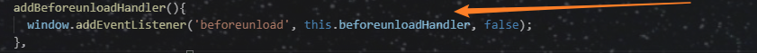
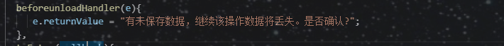
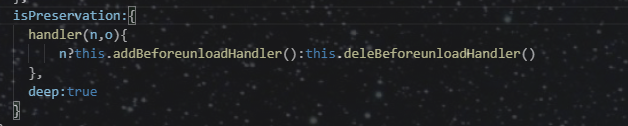
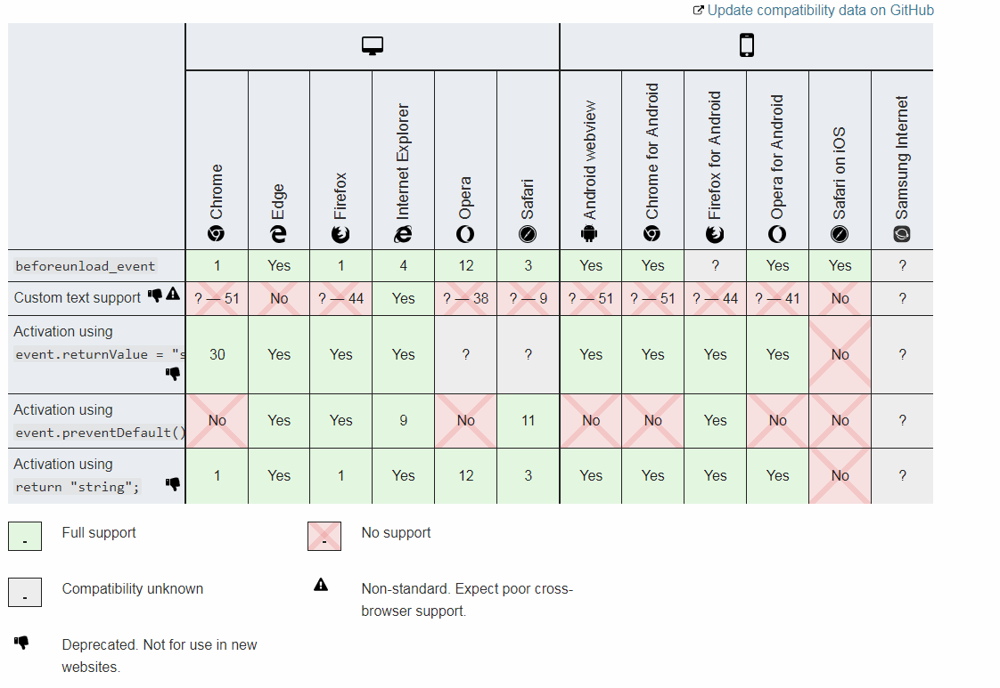
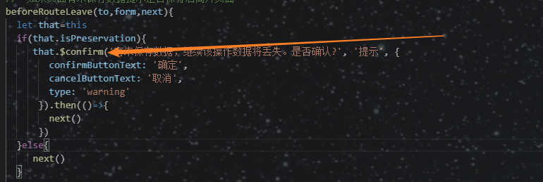

页面有数据未保存，用户离开页面分为两种
1 . 直接关闭浏览器标签 或者点击浏览器后退按钮 离开当前页面
2. 在页面内改变路由，或则刷新页面（不包含新标签页打开页面‘target=_blank’）
先说第1种情况 通过关闭页签和后退按钮
window.addEventListener('beforeunload', (event) => {
// Cancel the event as stated by the standard.
event.preventDefault();
// Chrome requires returnValue to be set.
event.returnValue = '';
});注意 event.preventDefault();谷歌不兼容该方法（详细兼容见下文兼容详图）
笔者实现如下
addBeforeunloadHandler(){
window.addEventListener('beforeunload', this.beforeunloadHandler, false);
},注意这里是callback 该事件对象可以设置提示语（目前官方文档标明不推荐使用兼容性很差具体兼容见下文兼容详图）

通过watch监听是否有数据未保存来判断 注册该方法还是清除该方法
清除注册的监听事件
deleBeforeunloadHandler(){
window.removeEventListener('beforeunload', this.beforeunloadHandler, false);
}自定义提示语的callback，注意兼容问题

事件监听：

简单的一段代码可以避免用户误操作丢失数据的蛋疼问题（通常丢失数据的误操作会问候无辜的码农们emmmm）
兼容详图 地址 https://developer.mozilla.org/en-US/docs/Web/API/Window/beforeunload_event

2 用户在页面中点击链接跳转页面和刷新页面 vue的 beforeRouteLeave 路由导航 beforeRouteLeave(to,form,next){
let that=this
if(that.isPreservation){
}else{ next()
} 自己的代码段（生命周期函数别大意写到其他生命周期函数内部了）
关于 to form next就不用介绍了 一般开发应该都知道是干嘛的。next（false） 取消导航
该方法为笔者自己项目使用的ui框架，就是弹窗而已，根据自己情况使用

两者一起使用，让用户未保存数据时无路可走。